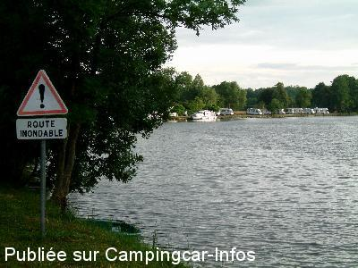
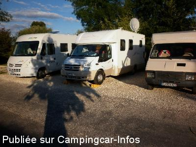
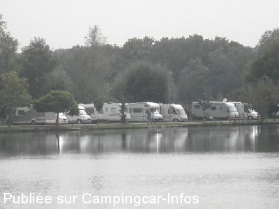
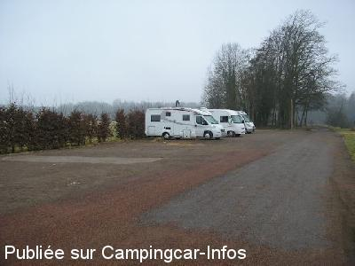
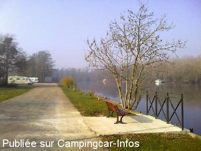
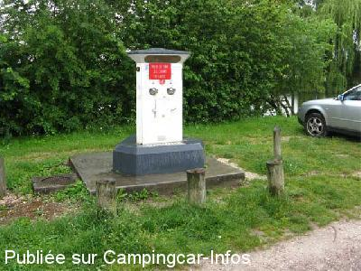

ASN = Aire de services avec stationnement nuit possible de :
GURGY
(N° 225)
Accès/adresse :
Rue du Halage
89250 GURGY
89250 GURGY
Latitude : (Nord) 47.86393° Décimaux ou 47° 51′ 50′′
Longitude : (Est) 3.5547° Décimaux ou 3° 33′ 16′′
Tarif : 2015
Stationnement, électricité : 7 €
Services gratuits
Passage d'un employé municipal pour paiement
Type de borne : RACLET
Services :


Tous commerces à 100 m du centre du village
Autres informations :
Ouvert d'avril à octobre
30 emplacements sur gravillons ou herbe
12 branchements électricité
Tel : +33(0)386 530 286

Le 01/01/2015 par Brian

Le 10/09/2014 par CLIFORD 33

Le 02/01/2014 par DIDI 31

Le 05/03/2012 par hlio1946

Le 13/03/2011 par philr

Le 10/06/2010 par Dominique
de
DENIS YOLAINE
le 21/03/2016 :
De passage ce 21 mars 2016 , l'aire est inaccessible pour travaux .... Jusque quand ?????? Pas un seul mot de renseignements . Un peu léger pour les éventuels utilisateurs .
DENIS YOLAINE
De passage ce 21 mars 2016 , l'aire est inaccessible pour travaux .... Jusque quand ?????? Pas un seul mot de renseignements . Un peu léger pour les éventuels utilisateurs .
DENIS YOLAINE
de
claire70
le 19/08/2015 :
Nous avions l'habitude de nous y arrêter pour faire notre coupure.
La commune a fait quelques travaux ???
Elle a numéroté les places ?????
Pour nous 7 € c'est trop cher, nous avons passé notre chemin.
Nous avions l'habitude de nous y arrêter pour faire notre coupure.
La commune a fait quelques travaux ???
Elle a numéroté les places ?????
Pour nous 7 € c'est trop cher, nous avons passé notre chemin.
de
le 02/08/2015 :
12 branchements electriques pour 30 emplacements , c'est vraiment du racket . merci la commune ,
12 branchements electriques pour 30 emplacements , c'est vraiment du racket . merci la commune ,
de
lebullois
le 21/06/2015 :
De passage début juin, toujours aussi jolie et baignade dans l'Yonne mais les emplacements, s.v.p., un peu plus grand. Résultat des courses : la plus part des CC prennent 1.5 emplacement et la commune ne gagne pas plus...et le jeune homme qui vient encaisser en était bien conscient.
De passage début juin, toujours aussi jolie et baignade dans l'Yonne mais les emplacements, s.v.p., un peu plus grand. Résultat des courses : la plus part des CC prennent 1.5 emplacement et la commune ne gagne pas plus...et le jeune homme qui vient encaisser en était bien conscient.
de
Les Normands
le 10/06/2015 :
aire superbe, mais emplacement trop étroit, un mètre entre chaque camping car,
Le régisseur est très à la hauteur de sa tache, bon accueil, gentillesse .
Madame le maire pensez a nous donner unpeu d'espace.
Merci à la commune,nous reviendrons.
Michel et Annick
aire superbe, mais emplacement trop étroit, un mètre entre chaque camping car,
Le régisseur est très à la hauteur de sa tache, bon accueil, gentillesse .
Madame le maire pensez a nous donner unpeu d'espace.
Merci à la commune,nous reviendrons.
Michel et Annick
de
RG 77
le 02/06/2015 :
Aire améliorée mais maintenant forfait de 7 euros pour tous alors que les conditions sont différentes selon qu'on à la chance de profiter d'un bon emplacement ou d'un moins bon. (branches basses pour certains, électricité mais pas partout, emplacement encaillouté ou goudronné)
Nous aurions préféré une tarification adaptée à l'usage (un tarif pour le stationnement et un autre pour les services)
Ceci dit, le cadre est toujours aussi agréable.
Aire améliorée mais maintenant forfait de 7 euros pour tous alors que les conditions sont différentes selon qu'on à la chance de profiter d'un bon emplacement ou d'un moins bon. (branches basses pour certains, électricité mais pas partout, emplacement encaillouté ou goudronné)
Nous aurions préféré une tarification adaptée à l'usage (un tarif pour le stationnement et un autre pour les services)
Ceci dit, le cadre est toujours aussi agréable.
de
lebpatoche
le 20/05/2015 :
air refaite mais problème 30 places est 12 prises de courant (erreur non??)7 euros les 24 hrs eau vidange ect donc plus gratuite mais toujours aussi bien .
air refaite mais problème 30 places est 12 prises de courant (erreur non??)7 euros les 24 hrs eau vidange ect donc plus gratuite mais toujours aussi bien .
de
eric76
le 23/03/2015 :
étapes parfaites, jolie vue, très calme, eau pas encore en service en mars, proche de l'autoroute,commerçants pas très loin, station total access sur la route
étapes parfaites, jolie vue, très calme, eau pas encore en service en mars, proche de l'autoroute,commerçants pas très loin, station total access sur la route
de
CLIFORD 33
le 27/08/2014 :
Passage le 20&21/08/2014 stationnement vue sur le canal tres calme balade le long du canal commerces a150m bravo a la commune de GURGY BRIGITTE&JOELC
Passage le 20&21/08/2014 stationnement vue sur le canal tres calme balade le long du canal commerces a150m bravo a la commune de GURGY BRIGITTE&JOELC
de
Dan & véro
le 19/08/2014 :
Aire très calme avec une superbe vue sur le canal.
Trois chalets ont été construits avec une vente de produits régionaux. Merci à la municipalité.
Aire très calme avec une superbe vue sur le canal.
Trois chalets ont été construits avec une vente de produits régionaux. Merci à la municipalité.
de
Christiane73
le 27/07/2014 :
Passé sur cette aire, 2 nuits, au calme... Cadre agréable!!!
Passé sur cette aire, 2 nuits, au calme... Cadre agréable!!!
de
Françoise
le 31/05/2014 :
Superbe aire, dans le plus grand calme. Commerces à pieds (superette, pharmacie, ..)
Superbe aire, dans le plus grand calme. Commerces à pieds (superette, pharmacie, ..)
de
Franck
le 26/07/2013 :
De passage le 6 juillet 2013, en route vers l'Italie pour une étape; beaucoup de monde en ce début des vacances (il ne restait que 2 places); effectivement, il s'agit plus là d'un lieu de stationnement prolongé que d'une aire d'étape pour une nuit ou 2.
Très calme, avec une vue immanquable sur le canal; reposant. Attention aux moustiques....
De passage le 6 juillet 2013, en route vers l'Italie pour une étape; beaucoup de monde en ce début des vacances (il ne restait que 2 places); effectivement, il s'agit plus là d'un lieu de stationnement prolongé que d'une aire d'étape pour une nuit ou 2.
Très calme, avec une vue immanquable sur le canal; reposant. Attention aux moustiques....